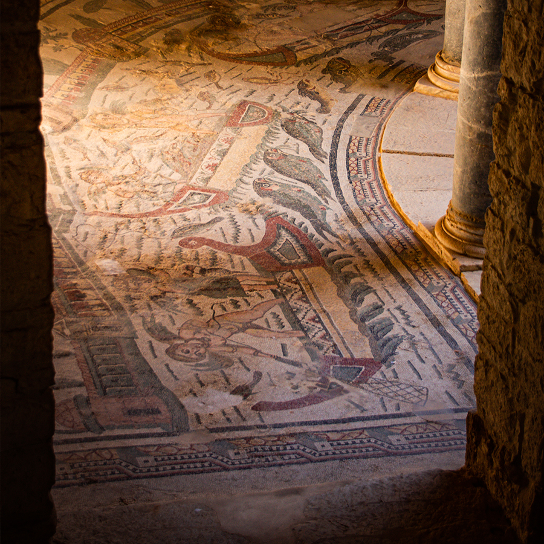
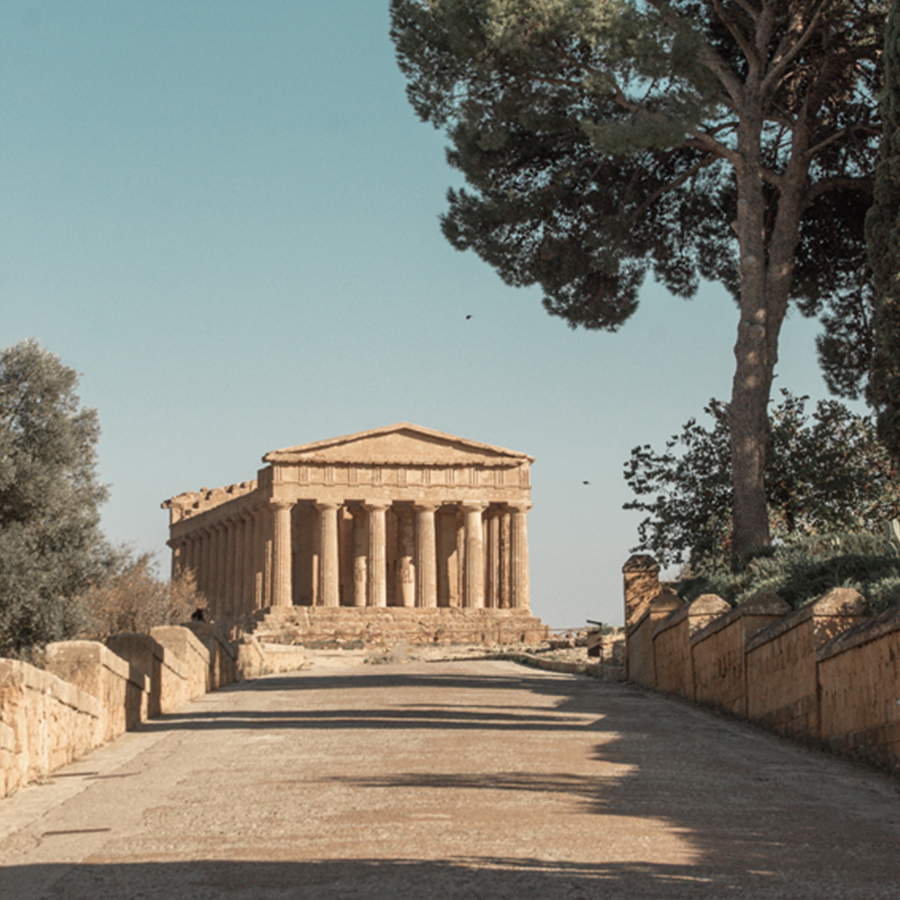
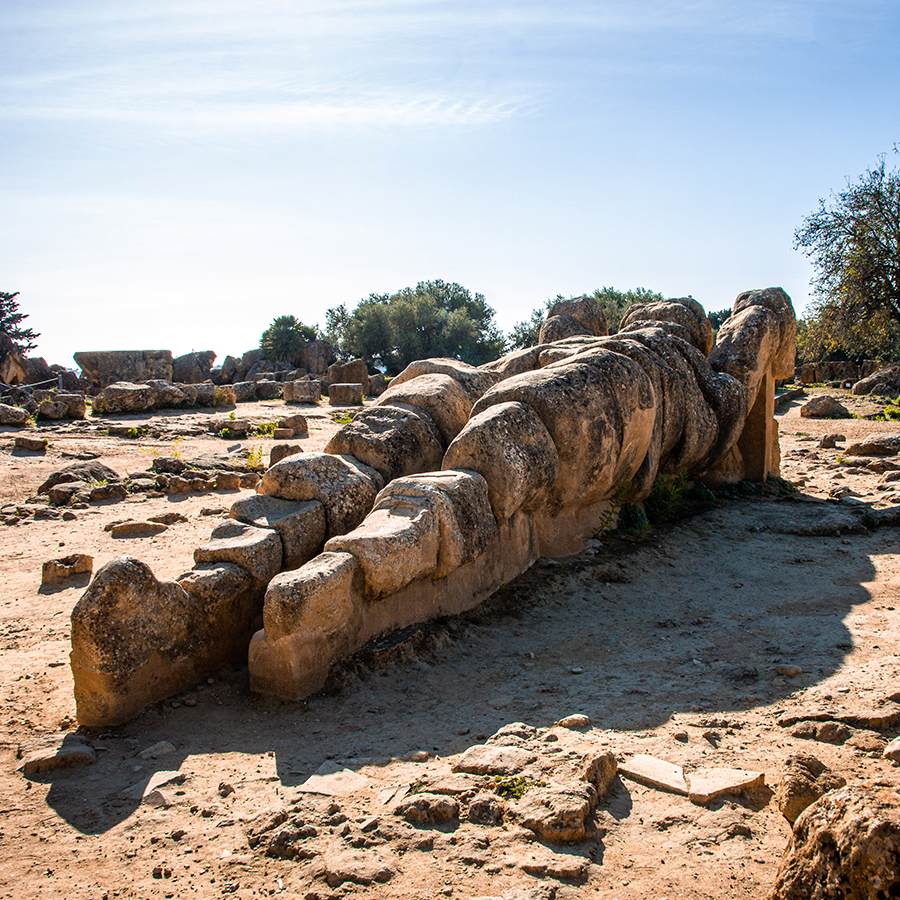
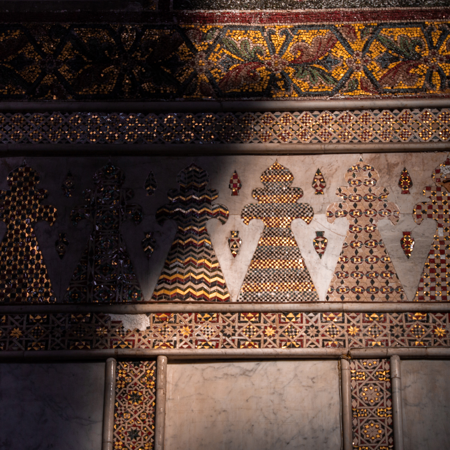

The purpose of art
Sicily
We recently took a short trip to Sicily. Among eating italian food, walking around the cities and getting way up to see Etna up close, we were sightseeing.
Our first stop was the Villa Romana del Casale. Beautiful place and a great opportunity to see mosaic floors. Rooms designeted for work and for servants had decorative patterns. Those designeted for the family were created to tell stories.
Diferent puposes
The purpose of those beautiful floor mosaics was to tell a story of a great hunt or to show the exotic animals the family was importing from Africa to Rome. Another goal was to show status and to intimidate (some mosaics were showing what happens to unwilling to cooperate slaves).
The mosaics were serving more than one purpose. They were more than just being a decorative floor.
After that, we went to Agrigento - known for the ruins of the ancient city of Akragas in the Valley of the Temples from hellenistic period. You can find there a bit more than expected. And that is the place you can start thinking about yet another purpose of art - relgious.
 And in the evening we started driving to Monreale. As we parked car we decided that we're hungry and
started looking for food. That is how we discovered a lovely place that was serving pizza and was
displaying local artists - Pizzeria
Art Libri Totó. Next day, we went to see the purpose of our arrival in the city of Monreale - Monreale Cathedral - 12th century cathedral
with golden mosaics all over the interrior. And this is a place where you cannot escape the religious
purpose that art was serving for centuries.
The cathedral is a masterpiece. And just like the
mosaics from the roman villa the mosaics here are also telling stories. Biblical stories on the walls of
churches had educational purposes as not all taking part in masses were literate.
But there was a decorative purpse to it as well. Many of the mosaics were patterns - on the walls and floors and they were there solely for the decorative purpose and no other. But the cathedral was build to humiliate the bishop of Palermo - it was build to show of the power and status and on unimaginable speed.
Now
In the past patrons of the arts were indirectly or directly influencing the purpos of the art -
decorative, educational, religious, to show power and status or to simply show how somebody looks like.
Middle ages portraits were todays selfies with instagram filters on. The art was suppost be mimicing the
real life but in a grandier way (women were more beautiful, the battles were bigger, and men were
younger).
But than the philosophy changed. The social dynamics changed. And so did art. Hilma af
Klint (before anyone we know of) started exploring what other purposes art can serve (death of her sister
deffinitely had something to do with that as well). She started discovering that we do not have to turn
ourselves to photorealism - photography took over. She started exploring automatic drawing, geometric
forms, and moved to more fluid forms. She discovered astractionsm before Kandinsky or Mondrain.
But
what about now? What are the functions of visual arts today? We do not need to mimic the world anymore, we
can but we do not have to. The patrons of the arts are different now. The whole enviroment is
different than it was a century ago. So what functions beside decorative the visual arts can take over?
From what I observe a lot of art is done to create change - political change, social change, change of
perspective. We want to change the world and our tool to express what aspect of the world we are
interested in changing is art. Some are interested in climate change as the subject of their work, some
others are interested in the subject of minorities (none-heteronormative, races, women? - can we be
encountered for a minority in terms of our rights etc?).
I am interested in our psychology. I
belive that the only way to force change (social/political) is by changing ourselves. It's like in the
song:
"If you wanna make the world a better place
Take a look at yourself and then make a
change"
And I firmly belive that people that are truly in content, in agreement with
themselves (and they are not psychopaths), that are not doing things from the position of insecurities,
fragile ego, yearning for love they never had etc. are the people who make this world a better place. The
way for us to move forward, I believe is being true to ourselves and with ourselves. Is to fill the empty
spaces in our egos or to deflate our egos. But not in a demeaning way. We need to feel good with
ourselves, in our bodies, in our comunities to be able to press any other change. And we cannot do that if
the only messages we get are depressing, demeaning, agressive, mocking.
So the purpose of my work
is to empesise the importance of our mental health, to focus our attention to our needs, to positive
emotions and to educate about mental health through art. What purpose are you serving?